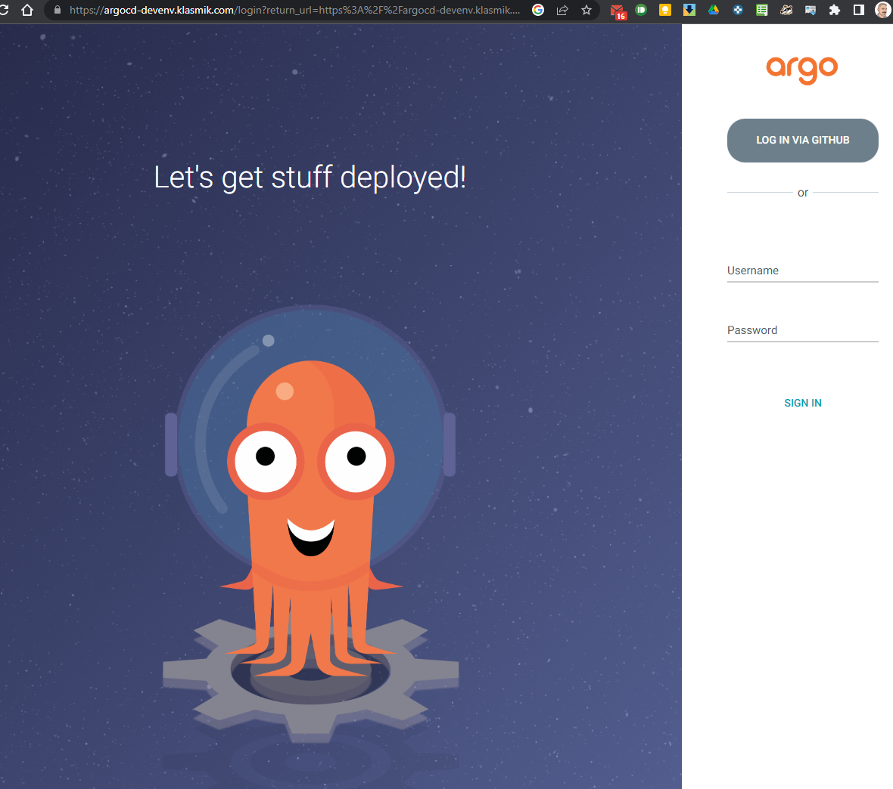

Cluster deployment¶
Cluster setup¶
As as example, we will use K3s. K3s is setup with the following command (see the k3s documentation):
For windows users, The howtos section tells how to quickly install k3s on Windows.
Pre-requisites¶
From where you deploy autocloud, you will need:
- The credentials (SSH key) to access the git repository.
- The age key used to encrypt the secrets.
You also need the following software:
- git
- kustomize
- kubectl
- krmfnbuiltin
If you're deploying from the machine on which you performed the environment customization you should be good to go.
Deployment¶
Because this is GitOps, the bootstrapping is done by deploying what has been pushed:
Checking deployment status¶
You can check the deployment status with the following command:
> kubectl -n argocd rollout status deployments,statefulsets,daemonsets --timeout=90s
deployment "argocd-redis" successfully rolled out
deployment "argocd-applicationset-controller" successfully rolled out
deployment "argocd-dex-server" successfully rolled out
deployment "argocd-notifications-controller" successfully rolled out
deployment "argocd-repo-server" successfully rolled out
deployment "argocd-server" successfully rolled out
partitioned roll out complete: 1 new pods have been updated...
>
And then see the applications with the following command:
> kubectl -n argocd get applications
NAME SYNC STATUS HEALTH STATUS
appstage-00-bootstrap Synced Healthy
appstage-01-online Synced Healthy
argo-cd Synced Healthy
cert-manager Synced Healthy
cloudflare-client Synced Healthy
external-dns-cloudflare Synced Healthy
external-dns-ovh Synced Healthy
ingresses Synced Healthy
sish-client Synced Healthy
Going to the configured URL (here https://argocd-devenv.klasmik.com/) should allow you to login:

You can login as admin or with your github account. You can then access the applications page: